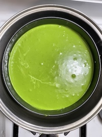

Matcha tea and cheesecakes are a very unusual and unorthodox pairing as far as cheesecake flavors go. That wasn't a deterrent for me. I've been interested in cooking matcha flavored deserts, and found that cheesecakes aren't particularly hard to make. Though, they are easy to mess up. In this article, I will be going through the ingredients and steps on how to bake this tea-licious desert
In my journey with matcha cheesecakes, I've found that using a higher quality tea is uncomparable to the lower counterparts. Though, good matcha tea isn't cheap. I use Ippodo's Ikuyo line for baking that comes in at $0.50/g. It's a good balance of quality and affordability.
| Ingredient | Serving | Purpose |
|---|---|---|
| Matcha tea | 30 grams | Cheesecake |
| Cream cheese | 500 grams | Cheesecake |
| Heavy cream | 90 grams | Cheesecake |
| Egg | 3 Large | Cheesecake |
| Vanilla extract | 1 teaspoon | Cheesecake |
| Sugar | 150 grams | Cheesecake |
| Cornstarch | 1.5 tablespoons | Cheesecake |
| Lotus Biscoff Cookies | 8.8 ounce package | Base |
| Un-salted Butter | ~180 grams | Base |
"Alright alright alright." - Matthew McConaughey
We will begin with the cookie base since it will have to bake and cool which will take some time. Before anything, preheat your oven to 350F, don't forget to remove everything from inside the oven like I did. As well, set all the cold ingredients (e.g. eggs, cream cheese, etc.) out to come up to room temperature. To start, crush the Biscoff cookies to a fine powder, I like to use a food processor because I'm lazy. Next, we are going to melt, not brown, the butter and pour it over the cookie powder. Mix and add butter until you have a sand like texture.
From there line the bottom of an 8-inch springfoam pan with parchment paper. Throw the mixture in and press down until you have a flat layer. Place the pan in the oven for 12 minutes and set it aside after to cool. As well, set the temperature of the oven to 290F, this is for the cheesecake.
Following the quote from Matthew, let's get to the cheesecake. In a large bowl, beat down the cream cheese until smooth, I have an electric hand beater, but anything works. In a smaller bowl, add sugar and sift in the cornstarch and matcha tea. I highly recommend sifting in the latter two, clumps are your worst enemy here. Mix the three ingredients and set aside. Back to the large bowl, mix in the eggs one. at. a. time. Add the heavy cream.
Here is the somewhat eventful part, the color change. Little by little, mix in the small bowl of dry ingredients to our cheesecake batter. Make sure to scoop up the bits along the sides of the bowl to mix in. Although I add a set serving of vanilla extract, it should be added to taste and personal preference. When all the clumps are gone and the sides are clean, transfer the mix to the pan with our baked base. If you're wondering about the batter sticking to the sides, it won't. The cheesecake does expand while cooking but retracts while cooling down, but I digress, back to the cheesecake. With the batter in pan, smack down the pan on any surface to get out as many air pockets as possible. Even with all the time in the world, I've never gotten all of them out.
Let's bake this sucker. We are going to use the waterbath technique to ensure the cheesecake isn't overcooked and it's creamy. Place the pan in a slightly larger pan, see the image below. We're then going to place the larger pan into an even larger pan that is filled to the brim of the smaller pan with hot, preferred boiling, water. Very carefully place the pan family into the oven. We're going to leave it in at 290F for 2.5 hours or until the cheesecake doesn't move when shaken. Once finished, turn off the oven and crack open the door slightly so the cheesecake can gradually cool down, this prevents cracking. When all is said and done, let the cheesecake set in the fridge for at least six hours or overnight and serve.
Cheesecakes are one of, if not, my favorite desert. Although I try to watch my sugar intake, I can't get enough of the thick and creamy texture of cheesecakes. Adding matcha tea is just one of many flavors for a cheesecake, but it elevates the taste to a degree that common fruit can't compare to. If there are no avid supporters of matcha cheesecakes, I am not alive.